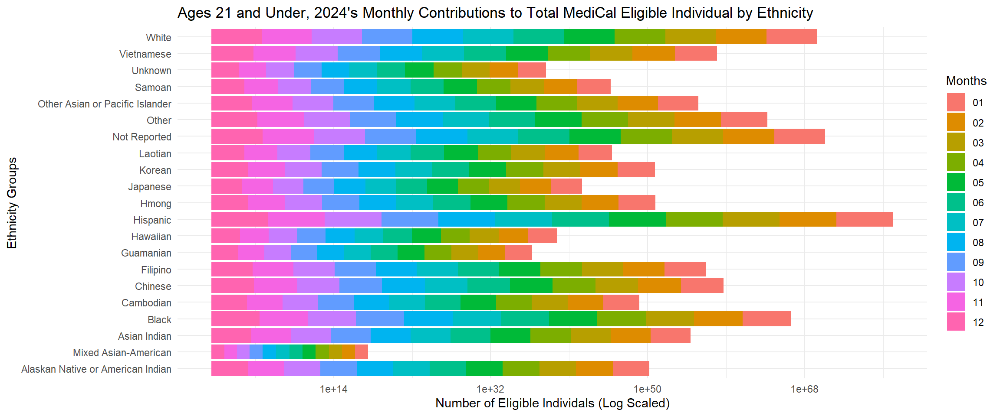

Warning: package 'purrr' was built under R version 4.4.3
── Attaching core tidyverse packages ──────────────────────── tidyverse 2.0.0 ──
✔ dplyr 1.1.4 ✔ readr 2.1.5
✔ forcats 1.0.0 ✔ stringr 1.5.1
✔ ggplot2 3.5.1 ✔ tibble 3.2.1
✔ lubridate 1.9.3 ✔ tidyr 1.3.1
✔ purrr 1.0.4
── Conflicts ────────────────────────────────────────── tidyverse_conflicts() ──
✖ dplyr::filter() masks stats::filter()
✖ dplyr::lag() masks stats::lag()
ℹ Use the conflicted package (<http://conflicted.r-lib.org/>) to force all conflicts to become errors
library(purrr)library(ggplot2)
Portgolio Part 2: Data Cleaning and Rough Draft
The Portfolio component is a place for you to put your R skills into action on a problem you are interested in with the goal of having a project you could are with future employers.
It should have the following qualities:
It is a real-world application of R that has not exactly been worked out before (e.g. it isn’t a demo from some package or blog).
It is interesting to you.
It involves data and analyzing or presenting that data. The data may be you have from a lab, or something you have retrieved from the web, some examples of good sources: FBI database, etc.
The analysis and presentation is useful in the real-world.
These are real-world projects, but they are also class projects and there can be unforeseen unknowns, if you find that it is going to be impossible to finish what you set out to accomplish, please contact your instructor to find a solution.
Portfolio Expectations
The final product will be a website page, hosted on your personal website, it included the following contents:
Description of the proposed research question.
Description of the data and the data source(s).
Description of data cleaning.
2 to 3 visualizations with commentary that answers the research questions.
Though no code should be visible on the website, the quarto document used to create the final product contains all code for stat cleaning and data visualization, commented and following a coding style conventions.
Part 1: Data Cleaning
Begin the process of cleaning your data. Be sure to comment on the code with the reason why you are making your modifications. It is possible you will need to transform your data in a dew different ways to make the data visualizations you planned to create, so you might have 1-3 different ‘final’ clean data sets.
Each clean data set should be exported and saved in a folder within the project.
Remember there needs to be a minimum 3 data transformations to meet the requirements of the project.
MediCal <-read_csv("Data_Raw/7.4-race-ethnicity-statewide_q4_2024_odp.csv")
Rows: 3135 Columns: 3
── Column specification ────────────────────────────────────────────────────────
Delimiter: ","
chr (2): Reporting Period, Race Ethnicity
num (1): Number of Eligible Individuals
ℹ Use `spec()` to retrieve the full column specification for this data.
ℹ Specify the column types or set `show_col_types = FALSE` to quiet this message.
MediCal <- MediCal |>rename(Period =`Reporting Period`, Ethnic =`Race Ethnicity` , Eligiblity =`Number of Eligible Individuals`) |>#Renaming all my variables into something more simpler and understandablemutate(Eligiblity =as.numeric(Eligiblity)) |># Making sure all Eligibility column is numeric datamutate(Ethnic =fct_recode(Ethnic, "Mixed Asian-American"="Amerasian")) |># Realized that I need to specify what Amerasian is for those who do not knowseparate(Period, into =c("Year", "Month"), sep ="-") # Want to separate the period into months and year## write.csv(MediCal, "Data_Clean/MediCal.csv")
Year <- MediCal |>group_by(Year, Ethnic) |>summarise(Total =sum(Eligiblity)) # Finding the total number of eligible individuals based on the year and ethnicity
`summarise()` has grouped output by 'Year'. You can override using the
`.groups` argument.
Filipino <- MediCal |>filter(Ethnic =="Filipino") |># I wanted to see if the number of eligible individuals were different for each month of a year in order to get the year's total and estimates average filter(Year =="2012") |>summarise(Total =sum(Eligiblity))Filipino ## Both had the same number so the code is done correctly above
# A tibble: 1 × 1
Total
<dbl>
1 444326
Month <- MediCal |>filter(Year =="2024") |>group_by(Ethnic) |>mutate(Total =sum(Eligiblity))## write_csv(Month, "Data_Clean/2024Monthly_MediCal.csv")
Part 2: Data Visualization
Attempt to create a rough draft of at least one of your proposed visualizations. Idenify anything you want to modify in your visualization, but do not know how to do.
Month |>ggplot(aes(x = Eligiblity, y = Ethnic, fill = Month)) +geom_bar(stat ="identity") +# Used ChatGPT to helped me get the stacked effectscale_x_log10() +theme_minimal() +labs(title ="Ages 21 and Under, 2024's Monthly Contributions to Total MediCal Eligible Individual by Ethnicity", x ="Number of Eligible Individals (Log Scaled)", y ="Ethnicity Groups", fill ="Months")

Something I want to be able to modify is how would I be able to see the contrast of each month more differently or if this contrast is needed at all. I want to change the color of the month.